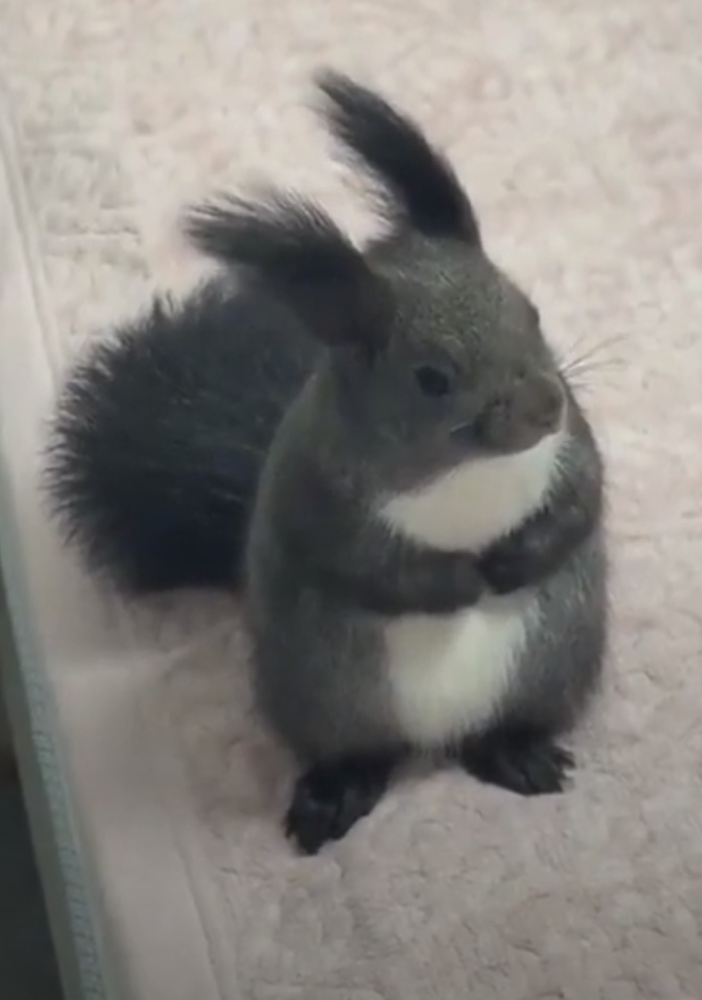

✦
Growing your little woodland…
A WOODLAND PHYSICS PLAYGROUND
A little wild.
A little nutty.
Big tail. Small paws. A whole grove
of things to get your paws on.
Your own tiny corner of the wild.
01 / NUTWOOD GROVEGolden hour. Good company.
Bring nuts back to the hollow stump.
◆YOUR HOLLOW
W A S D move · drag to look · SPACE jump · SHIFT run · C climb
0.0 m↑ ↓ climb · ← → around · Jump to leap
Swipe the woodland to look around
MEET THE LOCAL
A very good
little squirrel.
Tufted ears, a cream belly, tiny claws, and a tail with a mind of its own. Modeled from your photo.

THE INSPIRATION
Your original squirrelDrag to turn · scroll or pinch to zoom
The grove needs WebGL.
Try opening this page in Safari or Chrome with hardware acceleration enabled.